Chapter 22
Space advantage
22.1 Introduction
Do you know any people with claustrophobia? Or perhaps you suffer from it yourself? It’s actually quite a normal phenomenon that a man does not feel comfortable in small, close spaces.
Again, a parallel between daily life and the game of chess is easily made. Actually, it is logical that in a chess game too, freedom of movement plays an important role. The old teacher Tarrasch had quite extreme views on this: the seed of defeat was already sown if one of the players had to contend with a significant lack of space. Today we know that this axiom is too dogmatic, and we will see examples to that effect later on in this chapter.
Still, Tarrasch was partly right. The player who has more space can manoeuvre more easily with his pieces. His space advantage allows him, among other things, to switch from one wing to the other more quickly. The player with a lack of space will have trouble switching. The coordination between his pieces can be disturbed, not to mention certain paralysis symptoms that manifest themselves when he is setting up his pieces.
Let’s first take a look at a schematic example, where a space advantage allows a quick piece switch. In the diagram position, White has tried to conquer the a-file, but Black has managed to oppose just in time. Thanks to his enormous space advantage, White can now quickly transfer the battle to the kingside.
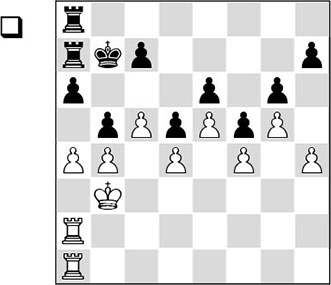
1.h5! bxa4+
Despite the delicate circumstances, this is Black’s best chance.
After 1…c6, White breaks through on the other side of the board: 2.hxg6 hxg6 3.♖h2 ♖g8 4.axb5 cxb5 5.♖h7+ ♔a8 6.♖ah1, and Black will lose at least a pawn.
2.♔xa4!
Surprisingly, White takes back with the king, in order to prepare the following doubling on the h-file.
2…♖h8
2…a5 does not help either after 3.b5 gxh5 4.♖h2 ♖g8 5.♖xh5 ♖g7 6.♖ah1, and the switch of the white rooks is much quicker than that of the black ones. Another defensive attempt, 2…♖g8, is also doomed to failure: after 3.♖h1 c6 4.hxg6 hxg6 5.♖h7+ ♔b8 there follows 6.♖ah2, and Black doesn’t stand a chance.
3.♖h2 ♖aa8 4.♖ah1
Here it turns out that Black cannot maintain control of the h-file due to his lack of space.
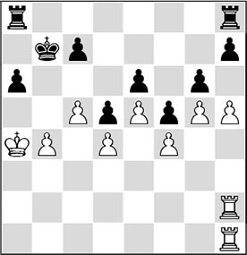
4…♖hg8 5.hxg6 hxg6 6.♖h7 ♖ae8 7.♔a5 ♔c6 8.♖1h6 ♔b7 9.♖f7
and the win is only a matter of time.
In many of my own games I can also count on a significant space advantage. This way of ‘pressing’ on the enemy position, which Petrosian has taught us, has made quite a number of my opponents despair as well. Every time I had one of those closed positions on the board, I could hear the comments of my club mates already: ‘You’ve got so much space – you can put two arms on the lower half of the board without pushing over any pieces!’
22.2 Which pieces should be exchanged?
An important strategy for the player who lacks space is to exchange pieces. That sounds logical, as piece exchanges will automatically create more elbow room for him. Compare the following two diagrams.
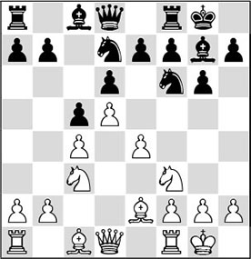
Compared to the first diagram, Black has traded off two pieces in the second. The difference is obvious.
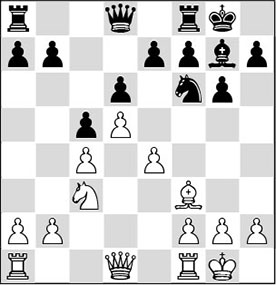
In the first diagram his pieces are in each other’s way – especially the bishop on c8 is hampered by the knight on d7, which, in turn, is hindered by the knight on f6. In short, the cooperation between the pieces is disturbed.
In the second diagram, there is no trouble at all for the black player. His minor pieces are harmoniously placed, as a result of which he does not experience any problems through his disadvantage in space.
To the lack of harmony within the own lines we have already paid extensive attention in Chapter 19.
In the meantime, though, we have made an important discovery:
- In principle, the player who has more space should avoid exchanges.
In the following game, the white player knows exactly which pieces he can and cannot exchange.
RG 4.2 (C42)
1.e4 e5 2.♘f3 ♘f6 3.♘xe5 d6 4.♘f3 ♘xe4 5.d4 ♗e7 6.♗d3 ♘f6 7.h3 0-0 8.0-0 ♖e8 9.c4 ♘c6 10.♘c3 h6 11.♖e1 ♗f8 12.♖xe8 ♕xe8 13.♗f4 ♗d7 14.♕d2 ♕c8
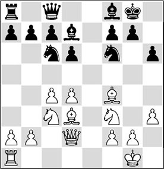
Black has little space, and his pieces are badly in each other’s way. With his last move he indicates that he would gladly swap the light-squared bishops on f5. After this trade, the d7-square would be vacated for the queen, and the rook on a8 could be brought into play as well. However, White puts a stop to that.
15.d5
In this way, Fischer increases his advantage in space and at the same time vacates the d4-square for a piece. The alternative was 15.g4?, but that is a much too drastic approach, which would immediately be refuted: 15…♗xg4 16.hxg4 ♕xg4+ 17.♗g3 ♕xf3, and Black has won two pawns.
15…♘b4
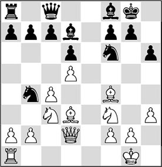
16.♘e4!
It is often difficult to determine which pieces you want and which you do not want to exchange. With the text move Fischer indicates that he will gladly exchange his queen’s knight for Black’s king’s knight.
16…♘xe4
If Black wanted to win the bishop pair with 16…♘xd3, he would have to allow a horrible doubled pawn in his king’s position with 17.♘xf6+ gxf6 18.♕xd3, which seems too high a price to pay. But in view of the further course of the game, perhaps he should have gone for that line.
17.♗xe4 ♘a6 18.♘d4
This was the intention of his sixteenth move. Now that the d4-square has been vacated for the knight, White can prevent the liberating move …♗f5 in an elegant way. So White does not allow the bishop swap, and as a consequence the black pieces on the queenside are slightly tangled up. In particular, the rook on a8 is out of play for the moment. The text move is better than 18.♕c2, with which White would stir up trouble for himself. After 18…♘c5, White is forced to play 19.♗h7+, but here this no longer looks so pretty. Also 18.g4 will turn out badly. After 18…♘c5 19.♗c2, Black can again take on g4 with the bishop.
18…♘c5 19.♗c2 a5
A suitable moment to choose the direction for the game to develop.
20.♖e1
White develops his rook as quickly as possible, with the intention of involving the rook in the attack on the kingside. Due to his lack of space, Black has trouble getting round to the same kind of switch.
20…♕d8 21.♖e3 b6 22.♖g3 ♔h8
The white pieces have taken up menacing positions, and White now faces the problem of how to increase the pressure.
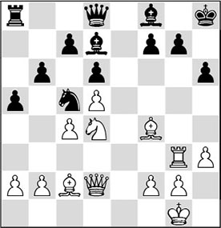
23.♘f3!
Typically Fischer! An appealing move was 23.♘f5?!, but Black has reasonable chances of staying alive after 23…♗xf5. Fischer wants to keep the knight and at the same time vacate the d4-square for a piece – it’s yet to be determined which one –, increasing the pressure.
23…♕e7
Black realized in time that 23…♕f6 fails to 24.♗e3!, followed by 25.♗d4, which is a merit of White’s 23rd move.
24.♕d4 ♕f6
Sad necessity, as after 24…f6 25.♘h4, Black could have packed it in right away.
25.♕xf6
White obtains an additional advantage: the opponent’s pawn structure is ruined.
25…gxf6 26.♘d4 ♖e8
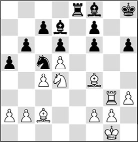
At long last the black rook threatens to become active. How should White react to this?
27.♖e3!
This move once more underlines how efficiently Fischer approached the game. The black rook threatens to become active and thus needs to be traded off. White assumes that an endgame with minor pieces will win for him in the long run, on account of his space advantage and Black’s ruined pawn structure.
Incidentally, 27.♔f1 was a good alternative.
27…♖b8
Gheorghiu takes Fischer’s word for it and avoids the rook swap.
28.b3 b5 29.cxb5 ♗xb5
White can always gain the bishop pair, but he wants more.
30.♘f5
The principled way to convert his collected advantages into material gain. The knight intervenes on the kingside. By the way, I fail to see what the problem is with 30.♘xb5. White then has two bishops in an open position and his rook can penetrate on the back rank, winning a pawn: 30…♖xb5 31.♖e8 ♔g7 32.♗xh6+ ♔xh6 33.♖xf8, with a very favourable ending.
30…♗d7
After 30…h5, the pawn is also doomed. White can capture a pawn in several ways, for instance: 31.♘g3 h4 32.♘h5.
31.♘xh6 ♖b4

White had to foresee this move. He has a cut-and-dried reply.
32.♖g3!
The right continuation, at least for a human chess player. White threatens to give mate, so that Black has no time to take the bishop. Only a computer ‘sees’ that White can also continue with 32.♘xf7+. After 32…♔g7 White saves his piece in a miraculous way: 33.♘d8!, and now 33…♖xf4 is not possible in view of 34.♖g3+ ♔h6 (34…♔h8 35.♘f7#) 35.♘f7+ ♔h5 36.♖g8 ♘e4 37.♗d1+ ♔h4 38.♖h8+, and Black gets mated.
32…♗xh6 33.♗xh6 ♘e4?
Black makes an ugly mistake, which relieves him from his suffering.
34.♗g7+
The right move. White wins at least a second pawn.
34…♔h7
Neither did the opposite-coloured bishop ending after 34…♔g8 35.♗xe4 ♖xe4 36.♗xf6+ ♔f8 offer Black any chance to save the game after 37.♖c3.
35.f3!
1-0
There is another former World Champion who also knows a thing or two about exploiting a space advantage.
RL 16.8 (C72)
1.e4 e5 2.♘f3 ♘c6 3.♗b5 a6 4.♗a4 d6 5.0-0 ♗d7 6.d4 ♘f6 7.c3 ♗e7 8.♘bd2 0-0 9.♖e1 ♖e8 10.♘f1 h6 11.♘g3 ♗f8 12.♗d2 b5 13.♗c2 ♘a5 14.b3 c5
With his last move, Black has mounted some pressure on White’s pawn centre. Now White has three possibilities:
A) Maintaining the tension and developing further with, e.g., 15.♖c1;
B) Breaking the tension with the 15.dxe5 dxe5 swap, and then playing for the d5-square;
C) Breaking the tension by closing the centre with 15.d5.
Which of these three possibilities would you choose?
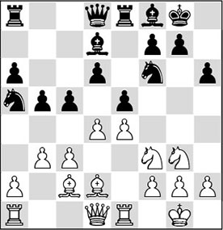
15.d5
The choice wasn’t too difficult, since this chapter deals with space advantages. The text move turns the black knight on a5 into another source of worry, as the beast cannot return to its natural square c6.
The plan under B) also isn’t bad in some cases, but if White had wanted to play this, the white knight should have gone to e3, in order to play for the d5-square. In the present circumstances, therefore, this would not be the right battle plan.
15…♘h7
With this move, Black has an important idea, and White must react adequately. Westerinen has acknowledged that he lacks space, and he tries to trade off a piece with 16…♘g5.
16.h3
A small, but very efficient move! White does not allow Black to swap a knight, since he could now meet 16…♘g5 with 17.♘h2!. Also, …♗g4 is ruled out permanently.
16…♗e7
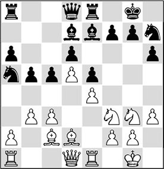
17.♘f5
Posing Black a dilemma. Although we have established that exchanges help Black, he cannot really take on f5, as that would mean giving up his best minor piece, with trouble on the light squares later on. Another nice example of the strategic question: which piece to swap?
17…♘b7
By giving the pawn on d6 extra protection, Black is now ready to trade off his bad e7-bishop on g5. If White continues with 18.♖e2, preventing the swap (18…♗g5 is met by 19.♗e1), he will allow himself to be driven back somewhat. Therefore he takes action now.
18.a4
With this action, Karpov transfers his operations to the queenside.
18…bxa4?
If Westerinen had known what awaited him after this move, he would have thought twice about it.
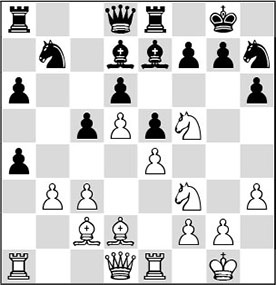
19.b4!!
A magnificent idea, which Black had not foreseen. ‘Chess is not checkers’, is a common saying among Dutch chess trainers, meaning that in chess we are not obliged to recapture. We should always keep an ‘open eye’ for other, possibly better moves. Karpov’s intention is to keep the black knight on b7 ‘in jail’. Furthermore, White can now recapture on a4 with his bishop, threatening to exploit the weaknesses on the light squares in Black’s camp (c6!).
After 19.bxa4? Black wouldn’t have too many problems anymore.
19…a5
Black is fighting hard to untie himself, by eliminating all the pawns on the queenside and thereby freeing the c5-square for his bad knight. However, it is questionable whether this opening of the position on this side of the board favours him, since his pieces are less mobile than White’s.
By interposing an extra swap on b4 with 19…cxb4 20.cxb4 a5, Black would still have ended up in an unpleasant position: 21.♗xa4 axb4 22.♗xb4 (22.♗c6 ♖xa1 23.♕xa1 ♘c5 24.♗xb4 ♘d3 25.♖b1 ♘xb4 26.♖xb4 also gives White a virtually decisive positional advantage) 22…♗xa4 23.♖xa4 ♗f8 24.♘d2 gives White a free hand on the queenside.
20.♗xa4 axb4 21.cxb4
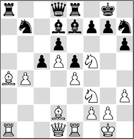
21…♗f8?!
Black changes plans, because he does not trust 21…cxb4 in view of the trick 22.♗xd7. Now, 22…♖xa1 is necessary (since 22…♕xd7 fails to 23.♖xa8 ♖xa8 24.♘xe5 dxe5 25.♕g4, cunningly winning the queen in view of the double threat 26.♕xg7# and 26.♘xh6+) 23.♕xa1 ♕xd7, but after 24.♗xb4 White also controls the position.
22.♗c6!
By far and away the best move. Black is deadlocked now, because the bishop cannot be captured; the unfortunate knight on b7 would have no squares in that case.
22…♕c7 23.b5
Of course! Now Black does not get a chance to exchange on b4, whereas White obtains a giant passed pawn. As a result, Black cannot move an inch now.
23…♘f6 24.♕c2 ♖eb8
It is clear that White has been very successful on the queenside. Karpov carries on in meticulous style.
25.♘e3
Hitting the nail on the head. The knight prepares to exert a paralysing influence from the c4-square.
25…♗c8 26.♘c4 ♗e7 27.b6 ♕d8
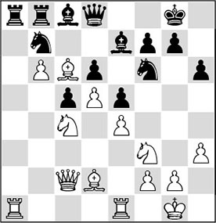
Now Black is completely tied up. With his next move White makes use of a tactic to make further progress.
28.♖a7!
White exploits the foothold on a7 to double his rooks.
28…♘d7
White would prefer Black to take on a7, as the passed pawn on a7 would bring about an immediate decision: 28…♖xa7 29.bxa7 ♖a8 30.♖a1 and there is no remedy against the threat of 31.♕b3, followed by 32.♘b6.
29.♕a4 ♖xa7
Now this is forced.
30.bxa7 ♖a8 31.♕a6
Here, 31.♖b1 would have been easier.
31…♕c7 32.♗xd7 ♕xd7
On 32…♗xd7, 33.♘b6 would win at least an exchange.
33.♘b6 ♘d8
A final convulsion.
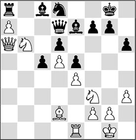
34.♕a1!
With this artistic move Karpov creates a fitting end to a consistently played game. After both 34…♕xa7 35.♘xa8 and 34…♖xa7 35.♘xd7 ♖xa1 36.♖xa1 ♗xd7 37.♖a7, Black will lose material. Therefore, he resigned.
We have now seen two examples where a player was slowly ‘squeezed to death’ by small strategic means. Eventually he was brought down by a dire lack of space and counterplay. Sometimes a space advantage leads to a direct attack on the king. In the following game we see how White converts this advantage tactically.
QI 14.5 (E15)
1.d4 ♘f6 2.c4 e6 3.♘f3 b6 4.g3 ♗a6 5.♘bd2 c5 6.e4
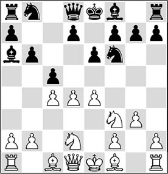
6…♗b7? 7.d5
Black’s last move wasn’t a very good one. The pawn on d5, on the other hand, guarantees White a great space advantage.
7…exd5 8.exd5
This should be preferred above the other recapture. The bishop on b7 is now ‘banging its head against’ the pawn on d5, and later on, thanks to his advantage in space, White will be able to conduct operations along the e-file. Black does not have a shred of counterplay.
With 8.cxd5 White would create a Benoni-like structure, where Black could at least counter with …b6-b5.
8…♗e7
Perhaps 8…g6 and 9…♗g7 would have been slightly better.
9.♗g2 d6 10.0-0 0-0 11.b3
The logical continuation. White places his queen’s bishop on the long diagonal, and at the same time strengthens his centre.
11…♘bd7 12.♗b2 ♖e8 13.♕c2 h6?!
A weakening that Black should preferably have avoided.
14.♖ae1 ♕c7

Both players have now completed their development, and in the following White effectively improves his pieces.
15.♘h4
The knight is beckoned by the square f5, because of the weakening pawn move …h7-h6.
15…♗f8 16.♘e4!
From the game Fischer-Gheorghiu, earlier in this chapter, we have learned that it is important to swap the right pieces. White would like to eliminate a defender of the black king, and he also wants to put a minor piece on e4 and double his rooks behind it. White keeps the threat of ♘h4-f5 alive, and with the text move he prevents the exchange of all the rooks, like Karpov did against Unzicker with the move 2.♗a7!! in Chapter 14.
16…♘xe4 17.♗xe4 ♗e7
Due to his lack of space and the bad positions of his pieces on the queenside, who will hardly be able to partake in the battle on the kingside, Black cannot do anything.
18.♘f5 ♗f6
White has manoeuvred his minor pieces into promising positions. Now all that remains is to activate the major pieces.
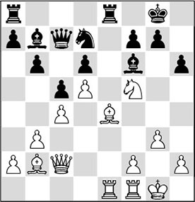
19.♖e2!
Small moves are often the best! This also applies to this rook move. For one, it is better than 19.♗xf6, since after 19…♘xf6 White would have unnecessarily traded off an attacking piece. With the text move White takes his time to double the rooks and then waits for events to develop.
19…h5?!
Another weakening, which is more or less understandable, but cannot be justified. Black wants to chase away the white knight with …g7-g6 without having this pawn hanging on h6, but if we take the further course of the game into account, he should have gone for the pawn sacrifice 19…b5.
20.♖fe1 ♗xb2
The black player decides against the planned 20…g6 after all, since White had prepared a small combination: 21.♘h6+ ♔g7
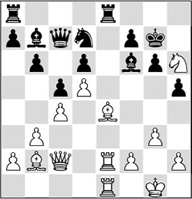
Analysis diagram
22.♘xf7!, and White’s attack is decisive, as becomes clear after 22…♔xf7 23.♗xg6+, and White wins. Or 22…♖xe4 23.♕xe4 ♔xf7 (23…♗xb2 24.♘g5) 24.♕e6+ ♔g7 25.♕e7+.
21.♕xb2 ♘f6 22.♗c2 ♖xe2 23.♖xe2 ♖e8
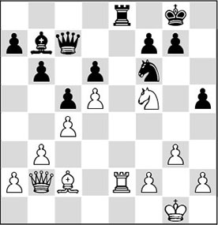
Black’s position still doesn’t look rosy, but it looks as if Helmers has managed to save himself. The most important attacking pieces are threatened with exchange. However, for Black the dawn turns out to be just before the darkest hour.
24.♕xf6!!
Splendid foresight by the Dutch grandmaster. This was what White had planned when he retreated his bishop to c2. By sacrificing a queen for a rook and a minor piece, White exposes the black king to a combined attack of the remaining white pieces. But especially the factor that the remaining black pieces hardly have anything to say on the kingside, will decide the issue.
24…gxf6 25.♖xe8+
1-0
Here Black resigned. Justifiably, since after the forced 25…♔h7, the point of White’s combination is 26.♖e7 (26.♘xd6+ is no mean move either), after which Black has to give up material: 26…♕b8 27.♖xf7+ ♔h8 28.♘h6, and the mate threat on h7 decides.
22.3 Lack of space as an advantage!
The heading above this section is just as mysterious as the following game is.
EO 40.6 (A34)
1.c4 ♘f6 2.♘c3 c5 3.g3 e6 4.♘f3 b6 5.♗g2 ♗b7 6.d4 cxd4 7.♕xd4 ♘c6 8.♕f4 ♗b4 9.♗d2 0-0 10.0-0 ♗e7 11.♖fd1 a6 12.e4 d6 13.♕e3 ♖a7!? 14.♕e2 ♕b8 15.♗e3 ♗a8 16.♘d2 ♖c8 17.♖ab1 ♘d7 18.b4 ♖b7 19.f4 ♘a7
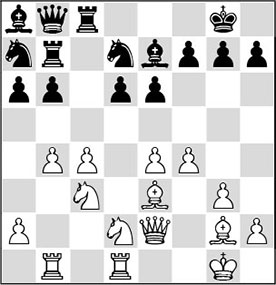
20.♖dc1 ♖bc7 21.♕d3 h6 22.♘e2 ♘f6
½-½
As a young man of 21, I visited the IBM grandmaster tournament in the Amsterdam RAI one day. There were many interesting positions on the demonstration boards, but the course of the above game especially caught my eye. I rushed to the commentary room to see if any comments would be given to this game. Soon it became clear to me that the commentator didn’t know what to say about it either, judging by several of his phrases that I overheard: ‘The black player must be tired of life, he crawls back to the three lowest ranks’, and: ‘This does not look anything like a game of chess. It’s more like building with Lego blocks’. But this was a game between two strong grandmasters! In other words, the black position had to be viable for one reason or another. What could a strong player like Ulf Andersson see in such trench warfare? Was it fear? An exaggerated sense of danger? Did he only want to draw with black?
When I got to the bottom of this game, it soon became clear to me that the Hedgehog, which is what this system is called, was more than just a fearful retreat to the lower ranks. When I played through several games with this system I noticed that Black was always fully in the game. What’s more, there were a number of strong players who employed the system.
By way of all kinds of strange move orders in the opening (for example, 1.d4 ♘f6 2.c4 c5 3.♘f3 cxd4 4.♘xd4 b6), The Hedgehog could appear on the board, and in most cases Black could play very sharply. In those days Black even achieved a small plus score with the Hedgehog, as far as I could establish from the available data.
It was time to subject the Hedgehog to closer examination. The most important characteristic I found was that a black c-pawn is traded for a white d-pawn, as also happens in the Sicilian. Another characteristic is that there are white pawns on e4 and c4. According to Maroczy (after whom this white set-up is named), White is better because of his pleasant space advantage. But was this assessment correct, looking at these examples? Probably there was more to this cheeky set-up. I tried to discover some logic to it by myself.
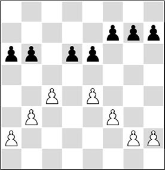
Black places a number of pawns on the sixth rank: a6, b6, d6, e6, and sometimes also g6 and h6. Here it dawned on me: these pawns have the function of a Hedgehog’s spines! White controls four ranks, but he can hardly approach with his pieces, since they are always warded off by the black pawns. It’s just what a hedgehog does when it feels threatened: it curls up and keeps the enemy at bay!
The picture I saw when playing through these games was that Black lines up his pieces harmoniously on the first three ranks, in the meantime anticipating his opponent’s moves. From the trenches, he patiently waits for his chances to occur, and in the meantime prepares a counter-thrust. By way of a counter-thrust, he has two important options at his disposal:
a) the central thrust …d6-d5
If White permits himself a few pawn weakening moves like b2-b4, f2-f4 or maybe g2-g4, Black can see if the time is right to break open the centre with …d6-d5. If the centre pawns are exchanged and the position is opened, White’s position will contain several holes that can be exploited by Black.
b) the flank attack with …b6-b5
In many games it turns out to be difficult for White to stop the push …b6-b5. As soon as Black has carried this through, and cxb5 axb5 follows, Black is ready to chase away the important white knight on c3 with …b5-b4. If this strategy works, then in most cases carrying through …d6-d5 will not be a problem either, after which the initiative passes on to the black player.
Below we will have a look at some of these breakthroughs in the centre. Of course, this does not cover all the problems exhaustively. And you may have noticed that I have painted a somewhat one-sided picture of this system. Indeed, in both cases I have only mentioned the chances for the black player. You will probably get it by now: I’ve started to play the Hedgehog myself! This step was mainly triggered by the following game, which made a great impression on me at the time:
SI 42.5 (B42)
1.e4 c5 2.♘f3 e6 3.d4 cxd4 4.♘xd4 a6 5.♗d3 g6 6.b3 d6 7.0-0 ♗g7 8.♗b2 ♘f6 9.c4 0-0 10.♘c3 ♘bd7 11.♖e1 ♖e8 12.♗f1 b6 13.♕d2 ♗b7 14.♖ad1 ♕c7 15.f3 ♖ad8 16.♕f2 ♘e5
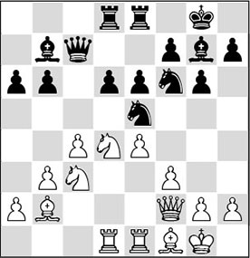
17.♖c1?
A stereotyped move, which White probably played without long deliberation. Because of the vis-à-vis of the rook and queen, the following move must have come like a bolt from the blue for Byrne.
17…d5!!
Precisely at a moment when White does not expect it, Black comes up with this central push.
18.exd5
Strangely enough, the capture with this pawn is White’s best chance. More logical was 18.cxd5 (since the rook has just been placed on the c-file), but to that move Andersson had prepared a fantastic rejoinder: 18…♘fg4!, and now we are at a crossroads.
A) 19.fxg4? ♘xg4 20.♕g3 ♗xd4+ 21.♔h1 ♘f2+, and Black wins;
B) 19.♕g3?!.

Analysis diagram
Now, another magnificent motif follows: 19…♘d3!!, and Black wins in all variations. The main line leads to mate: 20.♕xc7 (after 20.♘ce2 ♕xg3 21.hxg3 ♘xe1, White cannot count on anything either) 20…♗xd4+ 21.♔h1 ♘df2+ 22.♔g1 ♘h3+ 23.♔h1 ♘gf2#;
C) 19.♘a4?! ♕xc1! 20.fxg4 (20.♖xc1 ♘xf2 21.♔xf2 exd5) 20…♕c7, and Black has won an exchange;
D) 19.♕h4 ♗f6 20.♕h3, and here also, Black can strike: 20…♘xf3+! 21.gxf3 ♗xd4+, with a huge advantage, for example: 22.♔g2 ♘e3+ 23.♔h1 ♕e5 24.dxe6 ♖xe6, and due to the dominant position of the black pieces in the centre, White cannot move a muscle. But also after the text move, Black has a similar combination.
18…♘fg4! 19.♕g3
After 19.♕d2 it would be very tempting to continue with 19…♗h6?! 20.♕c2 (because after 20.f4 Black wins elegantly with 20…♗xf4! 21.♕xf4 ♘f3+ 22.♕xf3 ♕xh2#) 20…♗e3+, and Black will be ahead in material.
However, much stronger is: 19…♘xc4!! 20.♗xc4 ♕xh2+ 21.♔f1 exd5.

Analysis diagram
Since Black has now opened the e-file, the acute mate threat 22…♕h1 can only be prevented at the cost of huge material loss: 22.fxg4 dxc4 23.♖xe8+ ♖xe8 24.♘d1 ♕h1+ 25.♔f2 ♕xg2#.
Yet another interesting alternative is 19.♕h4 ♗f6 20.♕g3, and here also, Black makes use of the above-mentioned motif: 20…♘d3!.
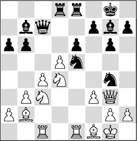
19…♘xf3+!
Clearly, the bombardment hasn’t stopped yet.
20.gxf3
Forced, since after 20.♕xf3?? White is mated by 20…♕xh2; and 20.♘xf3 fails to 20…♕c5+ 21.♔h1 ♘f2+ 22.♔g1 ♘e4+, followed by …♘xg3+, winning the queen.
20…♗xd4+ 21.♔h1 ♕xg3
Now Black liquidates to a winning ending.
22.hxg3 ♘e3 23.♗d3 exd5 24.cxd5 ♘xd5
It seems that 24…♗xd5 was somewhat simpler. After 25.♗e4 ♗xe4 26.fxe4 ♖e5, the technical job is no longer difficult.
25.♖xe8+ ♖xe8 26.♗e4
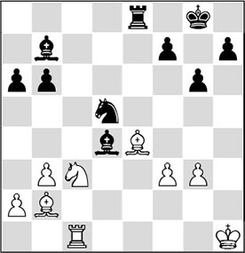
The combination has ‘merely’ led to the win of a pawn, and after the following move, converting that pawn seems to be a problem. But Andersson’s technique is impeccable.
26…♗xc3! 27.♗xc3 ♘xc3 28.♗xb7 ♘xa2 29.♖c6 a5 30.♖xb6 ♖b8!
After a forced simplification, Black has introduced a nasty pin.
31.♔g2 ♔f8 32.♖b5
This way White hopes to get out of the pin, but really nothing is going his way in this game.

32…♘b4! 33.♔f2 ♔e7 34.♔e3 ♔d6 35.♔d4 ♔c7 36.♖xb4 axb4 37.♗d5
With a pawn and an exchange to the good, the rest is not difficult.
37…♔d6 38.♗xf7 ♖f8 39.♗d5 ♖f5 40.♗e4 ♖g5 41.g4 h5
0-1
It was inevitable that one day I would also make use of the thematic push shown above.
EO 47.8 (A10)
1.c4 b6 2.♘f3 c5 3.♘c3 ♗b7 4.g3 ♘f6 5.♗g2 g6 6.0-0 ♗g7 7.b3 0-0 8.♗b2 d6 9.d4 cxd4 10.♘xd4
White has more chances of an advantage after 10.♕xd4.
10…♗xg2 11.♔xg2 a6 12.e4 e6 13.♕e2 ♕c7 14.♖fd1 ♘bd7 15.f3?!
This move is not necessary – yet. White should have preferred 15.♖ac1.
15…♖fe8 16.♘c2?
With the intention of playing 17.♘e3 on the next move, so as to keep the d5-square firmly under control, and to be able to besiege the pawn on d6. However, the knight move gives Black the opportunity for a slightly surprising combination.
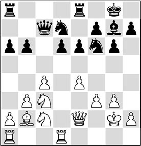
16…d5! 17.cxd5
Also bad is 17.exd5 exd5, as the queen is hanging and Black threatens to exchange on c4 at the same time, after which this point will be a mortal weakness.
17…exd5 18.♘xd5
Strangely enough, 18.♖xd5!? was White’s only chance to keep the balance: 18…♘xd5 19.♘xd5 ♕c5 20.♘ce3 ♗xb2 21.♕xb2, and White has sufficient compensation for the exchange.
18…♘xd5 19.♗xg7

White had probably calculated up to this point and thought that the black action was premature. He is in for a cold shower:
19…♕xc2!
Black optimally exploits the holes that have arisen in the white position. Note, for instance, the weakness of the square e3.
20.♕xc2
20.♖d2 is simply met by 20…♕c6.
20…♘e3+ 21.♔f2 ♘xc2
White resigned. He will be down a decisive amount of material.
In the following game I managed to seize the initiative with the breakthrough …b6-b5.
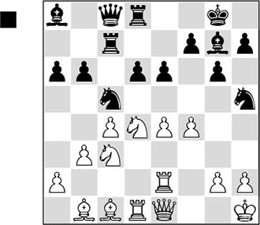
After some heavy-duty manoeuvring on both sides, Black considers that the moment has come to put his opponent through the mill.
1…b5!?
I must confess that during the game, this push was a shot in the dark for me.
2.cxb5 ♗xd4!
Black gives up this important bishop in order to make his way through the centre. The intention of the text move is to force a weakening of White’s back rank.
3.♖xd4
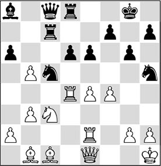
3…♘xe4
Plausible alternatives were: 3…axb5, because 4.♘xb5?! is not so good in view of 4…♘xb3!; or 3…♘xb3 4.axb3 ♖xc3.
4.♖c4?!
White does not find the right continuation. After 4.♗xe4 ♖xc3 5.♗d2 ♖c5 6.♗xa8 ♕xa8, things are unclear.
4…d5?!
But Black does not find the right continuation either. Thematic was 4…♖xc4 5.bxc4 ♘xc3 6.♕xc3 axb5, when the weakness of the c4-pawn will cause trouble for White. Black does not have to fear the long diagonal, since after 7.♗b2 e5 8.fxe5 he has a killer move: 8…b4!, and now 9.♕xb4 fails to 9…♘f4 10.♖f2 dxe5, and Black’s threats are decisive.
5.♖xc7 ♕xc7 6.♘xe4 dxe4
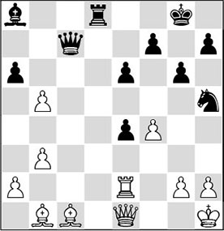
7.♗e3?
This costs an important tempo, which is something that White cannot permit himself in this sharp position. There are two alternatives: 7.bxa6 ♘xf4 (also after 7…f5, I suspect that the black centre, combined with his actively placed pieces, outweigh the white pawn mass on the queenside) 8.♗xf4 ♕xf4, and Black will have the upper hand.
An outright mistake would be 7.♗xe4? in view of 7…♗xe4 8.♖xe4 ♕c2, and White will suffer on account of his back rank.
7…♘xf4
Black is banking on his domination in the centre. With 7…axb5 he could have maintained his advantage in a simple way.
8.♗xf4?!
Better is 8.♖c2 ♕d6 9.bxa6.
8…♕xf4 9.bxa6 e3!
Whatever the cost, the long diagonal must be opened.
10.♔g1 ♖d2 11.♗c2 ♕d4 12.h3 ♕c5
Black must apply new means to tackle his opponent.

13.♗d1
White has defended desperately, but after this mistake the position slowly slips through his fingers.
13…♖d5
In itself, this is an interesting plan. The rook strives for the g-file. However, there was a hidden win here. With 13…♖b2! Black could have secured the full point. He is threatening … ♖b1, and the rook is taboo in view of 14.♖xb2 e2+ 15.♔h1 ♗xg2+! 16.♔xg2 ♕d5+, and Black will get a new queen.
Curiously, 13…♖xa2? does not lead to the desired goal. White saves himself with 14.♖xa2!, and now the same combination doesn’t work: 14…e2+ 15.♔h1 ♗xg2+ 16.♔xg2 ♕d5+ 17.♔f2 exd1♕ 18.♕xd1 ♕xd1 19.a7, and Black must give perpetual check.
14.b4
Certainly not 14.♖xe3 because of 14…♖xd1 15.♕xd1 ♕xe3+.
14…♕d4 15.♗b3 ♖g5 16.♕d1 ♕b6
A difficult situation for the white player. Black is ready for 17…♖xg2+ 18.♖xg2 e2+, winning the queen.
17.♔h1
Neither would 17.♕d3 help White. After 17…♖xg2+ 18.♖xg2 e2+, the e-pawn marches on. 17.♕c1 ♗f3 is no solution either.
17…♖g3! 18.♕d7
White makes an all-out attempt which will come to naught. After 18.♔h2 ♕b8 19.♔g1 ♖xh3!, it is also over for White. The defence 18.♕e1 fails to 18…♖xh3+ 19.♔g1 ♖h5.
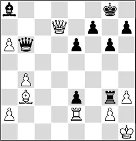
18…♖xh3+ 19.♔g1 ♕b8!
0-1
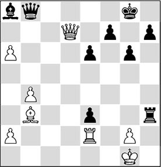
A pretty move to finish with. The black queen deals the final blow on the back rank after 20.gxh3 ♕g3+ 21.♔f1 ♕f3+ 22.♔e1 ♕h1#.
Nowadays, we know that White is a little better in a higher sense in the Hedgehog. Methods have been found to exchange one of the ‘spines’ (the plans with a2-a4-a5, e4-e5, and c4-c5 are based on this), thereby creating a strong square for a piece with which White can exert annoying pressure.
But these advantages are all marginal. Practice has proved that the Hedgehog remains perfectly viable in various forms.
Exercises
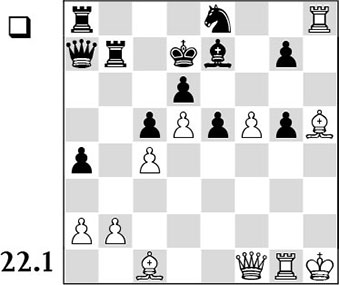
White has a huge space advantage and tries to convert this into a direct attack on the king. Do you see a way for White to decide the game in his favour?
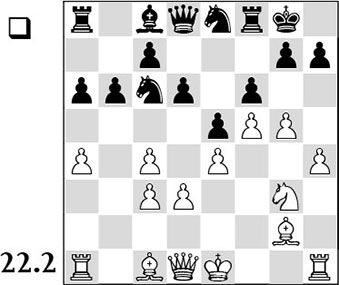
In this game, the computer has just played 18…f7-f6?, thereby digging its own grave. Its chronic shortage of space will lead to its downfall. What was the concept the white player used to pass judgement on the machine?
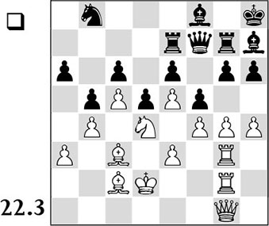
White has prepared extensively for the demolition of the black position. With which breakthrough move does he attack the black pawn formation? Give a few variations.
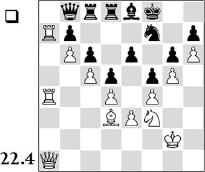
White has an enormous space advantage. How can he make progress? Indicate a plan for White and, if possible, also a variation.